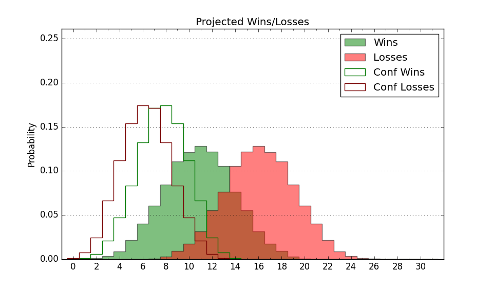

| Home | Game Probabilities | Conferences | Preseason Predictions | Odds Charts | NCAA Tournament |
| City: | Orangeburg, South Carolina | |
| Conference: | Mid-Eastern (1st)
| |
| Record: | 0-0 (Conf) 0-3 (Overall) | |
| Ratings: | Comp.: -12.3 (294th) Net: -16.3 (304th) Off: 92.2 (319th) Def: 108.5 (245th) SoR: 0.0 (274th) |
| Remaining | ||||||
|---|---|---|---|---|---|---|
| Date | Opponent | Win Prob | Pred. | |||
| 11/22 | @ Alabama A&M (342) | 46.7% | L 71-72 | |||
| 11/23 | (N) IUPUI (361) | 77.0% | W 78-69 | |||
| 11/27 | @ Marshall (162) | 15.1% | L 68-80 | |||
| 12/1 | @ Xavier (51) | 3.2% | L 61-86 | |||
| 12/5 | Samford (138) | 31.7% | L 74-80 | |||
| 12/9 | Charleston Southern (262) | 57.6% | W 73-71 | |||
| 12/14 | @ Furman (140) | 12.2% | L 67-81 | |||
| 12/18 | @ USC Upstate (335) | 44.9% | L 75-76 | |||
| 12/21 | @ Northern Kentucky (181) | 17.6% | L 63-74 | |||
| 12/29 | @ Georgia (65) | 4.0% | L 61-84 | |||
| 1/4 | @ Morgan St. (344) | 47.7% | L 77-78 | |||
| 1/6 | @ Coppin St. (363) | 75.4% | W 73-65 | |||
| 1/11 | Delaware St. (350) | 76.8% | W 73-65 | |||
| 1/13 | Md Eastern Shore (358) | 84.6% | W 77-65 | |||
| 1/25 | @ North Carolina Central (234) | 23.6% | L 69-77 | |||
| 2/1 | @ Norfolk St. (182) | 17.8% | L 65-76 | |||
| 2/3 | @ Howard (228) | 22.9% | L 68-77 | |||
| 2/15 | Morgan St. (344) | 75.7% | W 82-73 | |||
| 2/17 | Coppin St. (363) | 91.3% | W 78-61 | |||
| 2/22 | @ Delaware St. (350) | 49.3% | L 68-69 | |||
| 2/24 | @ Md Eastern Shore (358) | 61.8% | W 73-70 | |||
| 3/1 | Norfolk St. (182) | 42.4% | L 70-72 | |||
| 3/3 | Howard (228) | 50.2% | W 73-72 | |||
| 3/6 | North Carolina Central (234) | 51.3% | W 73-72 | |||
| Previous | Game Score | |||||
| Date | Opponent | Win Prob | Result | Off | Def | Net |
| 11/8 | @South Carolina (84) | 6.4% | L 64-86 | -6.0 | 4.7 | -1.3 |
| 11/14 | @Jacksonville (195) | 19.1% | L 62-71 | -7.7 | 7.2 | -0.5 |
| 11/16 | @Bethune Cookman (319) | 40.0% | L 62-75 | -9.6 | -5.2 | -14.7 |
| Stats & Trends | |||||
|---|---|---|---|---|---|
| Current | Day | Week | Month | Season | |
| Composite | -12.3 | -0.4 | -0.9 | -1.0 | -1.0 |
| Comp Rank | 294 | -3 | -5 | -8 | -8 |
| Net Efficiency | -16.3 | -1.9 | -4.3 | -- | -- |
| Net Rank | 304 | -19 | -31 | -- | -- |
| Off Efficiency | 92.2 | -2.3 | -3.2 | -- | -- |
| Off Rank | 319 | -18 | -54 | -- | -- |
| Def Efficiency | 108.5 | +0.4 | -1.0 | -- | -- |
| Def Rank | 245 | +8 | -13 | -- | -- |
| SoS Rank | 133 | -7 | -49 | -- | -- |
| Exp. Wins | 10.9 | -0.2 | -0.8 | -1.1 | -1.1 |
| Exp. Conf Wins | 7.7 | -0.1 | -0.2 | -0.0 | -0.0 |
| Conf Champ Prob | 9.4 | -0.6 | -6.1 | -5.7 | -5.7 |

| Advanced Stats | ||
|---|---|---|
| Stat | Value | Rank |
| Off Eff FG % | 0.415 | 338 |
| Off Ast Ratio | 0.126 | 246 |
| Off ORB% | 0.298 | 156 |
| Off TO Rate | 0.151 | 174 |
| Off FT Ratio | 0.353 | 169 |
| Def Eff FG % | 0.547 | 293 |
| Def Ast Ratio | 0.161 | 279 |
| Def ORB% | 0.342 | 295 |
| Def TO Rate | 0.175 | 88 |
| Def FT Ratio | 0.475 | 326 |